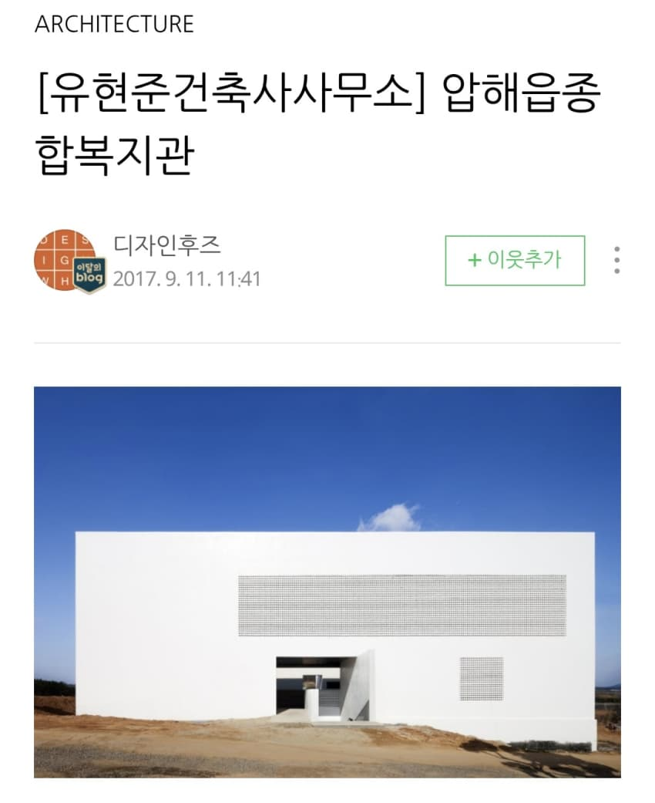
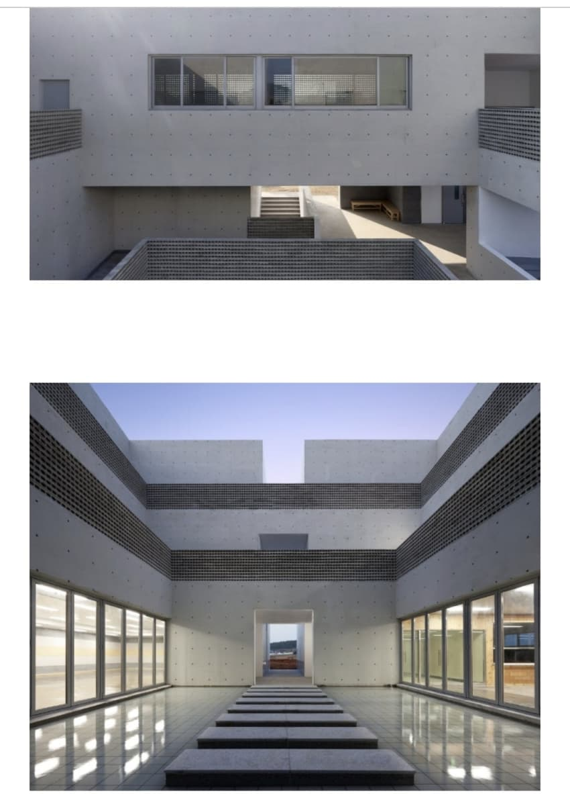
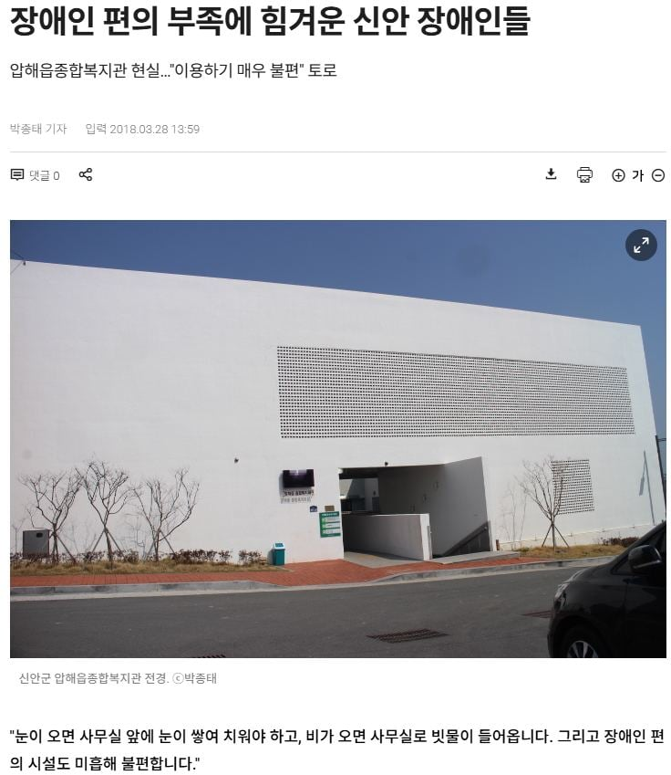
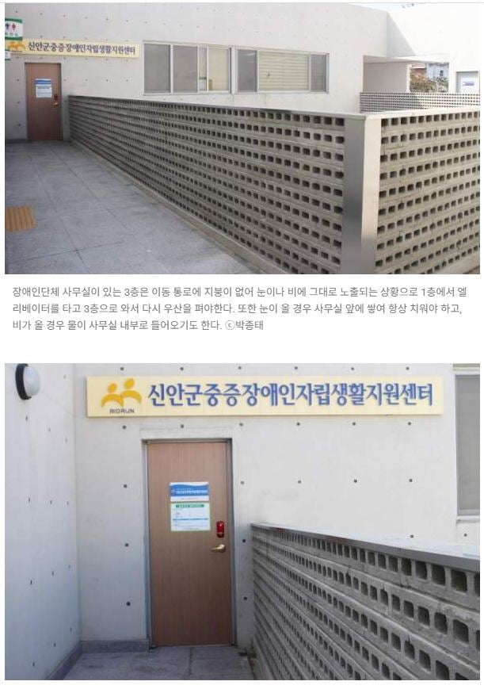
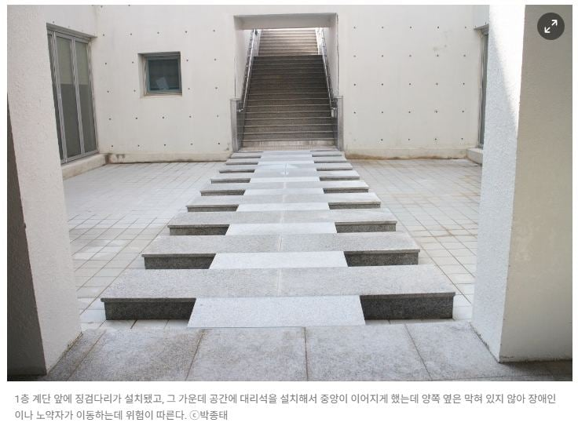
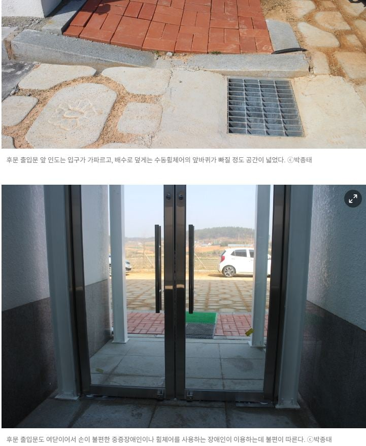
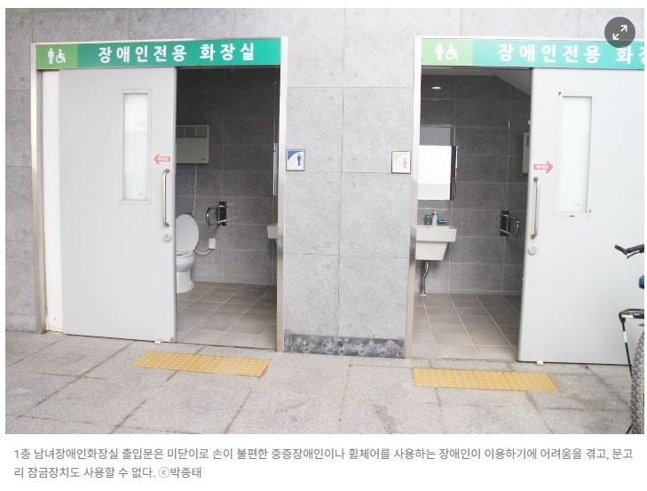
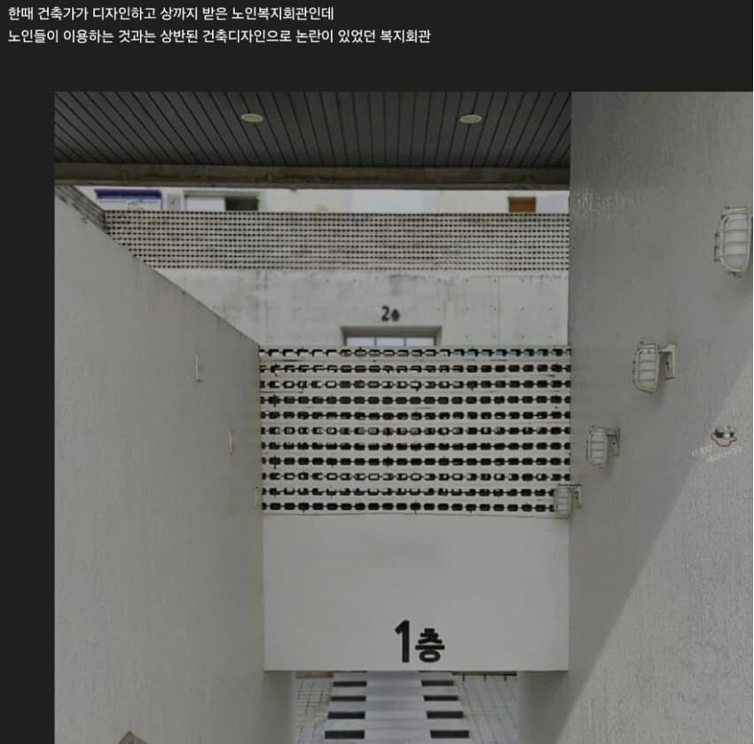
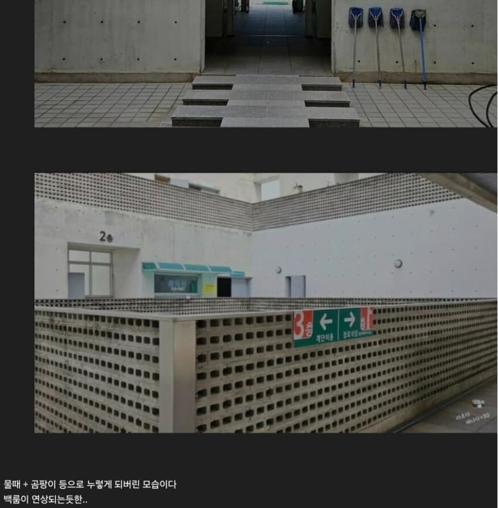
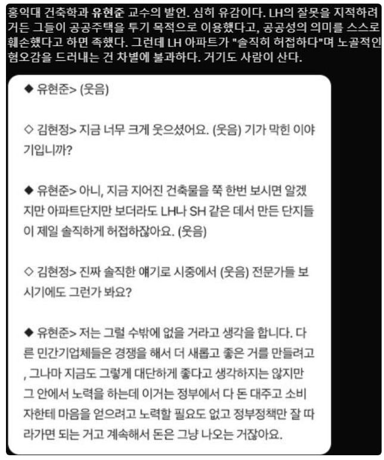

????










????
댓글
수집 당시 댓글 694개
· 실베현자 · 11.14 08:25:44
· ㅇㅇ · 11.14 08:37:54
ㅇㅇ · 11.14 08:19:01
· ㅇㅇ · 11.14 12:17:44
ㅇㅇ · 11.14 08:19:12
· ㅇㅇ · 11.14 08:22:19
ㅇㅇ · 11.14 08:26:31
· ㅇㅇ · 11.14 08:38:28
ㅇㅇ · 11.14 08:28:37
ㅇㅇ · 11.14 08:33:00
ㅇㅇ · 11.14 08:36:21
ㅇㅇ · 11.14 08:40:22
· ㅇㅇ · 11.14 10:06:13
ㅇㅇ · 11.14 08:41:34
· ㅇㅇ · 11.14 08:47:47
만갤초보 · 11.14 08:44:05
ㅇㅇ · 11.14 08:50:58
· 실베현자 · 11.14 08:55:21
ㅇㅇ · 11.14 08:55:37
· ㅇㅇ · 11.14 08:56:39
· ㅇㅇ · 11.14 08:57:26
· ㅇㅇ · 11.14 09:01:03
· ㅇㅇ · 11.14 17:24:47
ㅇㅇ · 11.14 08:55:37
· ㅇㅇ · 11.14 08:56:38
ㅇㅇ · 11.14 09:03:47
ㅇㅇ · 11.14 09:04:43
ㅇㅇ · 11.14 09:09:19
ㅇㅇ · 11.14 09:09:31
· 독갤러 · 11.14 09:28:42
· ㅇㅇ · 11.14 09:32:47
· ㅇㅇ · 11.14 09:51:07
· ㅇㅇ · 11.14 09:55:26
· ㅇㅇ · 11.14 16:27:56
Doll · 11.14 09:09:34
ㅇㅇ · 11.14 09:10:40
ㅇㅇ · 11.14 09:11:01
ㅇㅇ · 11.14 09:19:59
독갤러 · 11.14 09:32:00
· 독갤러 · 11.14 09:34:33
· 독갤러 · 11.14 09:35:46
· 독갤러 · 11.14 09:38:02
· 독갤러 · 11.14 09:38:55
· 독갤러 · 11.14 09:40:29
· 독갤러 · 11.14 09:41:14
· 독갤러 · 11.14 09:42:57
· 독갤러 · 11.14 09:44:16
· 독갤러 · 11.14 09:45:49
· 독갤러 · 11.14 09:46:40
· 독갤러 · 11.14 09:50:00
· 독갤러 · 11.14 10:01:09
· 독갤러 · 11.14 10:02:11
· 독갤러 · 11.14 10:06:50
· 독갤러 · 11.14 10:09:36
· 독갤러 · 11.14 10:29:22
· 독갤러 · 11.14 10:31:27
· 독갤러 · 11.14 13:10:17
ㅇㅇ · 11.14 09:46:42
· 독갤러 · 11.14 09:50:52
· ㅇㅇ · 11.14 09:51:23
· 독갤러 · 11.14 09:56:00
· 독갤러 · 11.14 11:40:19
ㅇㅇ · 11.14 10:06:46
독갤러 · 11.14 10:13:59
ㅇㅇ · 11.14 10:15:37
· ㅇㅇ · 11.14 11:15:32
ㅇㅇ · 11.14 10:25:10
ㅇㅇ · 11.14 10:27:26
ㅇㅇ · 11.14 10:29:26
o o · 11.14 10:30:53
ㅇㅇ · 11.14 10:35:21
ㅇㅇ · 11.14 10:50:43
ПКТ · 11.14 11:26:07
ㅇㅇ · 11.14 11:52:21
ㅇㅇ · 11.14 11:53:56
ㅇㅇ · 11.14 12:02:10
· ㅇㅇ · 11.14 12:02:21
ㅇㅇ · 11.14 12:05:31
ㅇㅇ · 11.14 12:09:11
ㅇㅇ · 11.14 12:09:23
ㅇㅇ · 11.14 12:10:00
ㅇㅇ · 11.14 12:45:58
ㅇㅇ · 11.14 13:58:43
· ㅇㅇ · 11.14 14:38:58
· ㅇㅇ · 11.14 17:19:28
· ㅇㅇ · 11.14 17:57:20
ㅇㅇ · 11.14 14:39:42
ㅇㅅㅇ · 11.14 15:08:02
ㅇㅇ · 11.14 15:14:38
ㅇㅅㅇ · 11.14 15:22:25
ㅇㅇ · 11.14 16:27:10
· ㅇㅇ · 11.14 16:33:41
ㅇㅇ · 11.14 16:46:31
ㅇㅇ · 11.14 17:00:34
ㅇㅇ · 11.14 17:20:20
ㅇㅇ · 11.14 17:29:46
ㅇㅇ · 11.14 17:29:49
ㅇㅇ · 11.14 17:29:53
dd · 11.14 17:57:33
dd · 11.14 17:59:35
· ㅇㅇ · 11.14 09:10:46
ㅇㅇ · 11.14 06:41:13
ㅇㅇ · 11.14 06:42:32
ㅇㅇ · 11.14 06:53:53
· ㅇㅇ · 11.14 08:11:27
ㅇㅇ · 11.14 06:54:49
ㅇㅇ · 11.14 06:56:53
ㅇㅇ · 11.14 06:58:56
공정성장 · 11.14 07:01:49
· 공정성장 · 11.14 07:10:31
그래도 일본은 지는 게 웃음벨
돌아온애우 · 11.14 07:02:07
· ㅇㅇ · 11.14 07:03:06
· 돌아온애우 · 11.14 07:03:30
· 돌아온애우 · 11.14 07:04:27
· ㅇㅇ · 11.14 07:51:57
· ㅇㅇ · 11.14 08:25:09
· 00 · 11.14 08:36:49
· ㅇㅇ · 11.14 09:33:21
· ㅇㅇ · 11.14 09:35:47
· 돌아온애우 · 11.14 09:36:13
· ㅇㅇ · 11.14 09:38:00
· 돌아온애우 · 11.14 09:38:44
· 00 · 11.14 09:40:07
· 돌아온애우 · 11.14 09:40:12
· ㅇㅇ · 11.14 09:40:25
· ㅇㅇ · 11.14 09:42:13
· 돌아온애우 · 11.14 09:42:32
· 00 · 11.14 09:42:53
· ㅇㅇ · 11.14 09:43:54
· ㅇㅇ · 11.14 09:45:03
· 돌아온애우 · 11.14 09:45:23
· 돌아온애우 · 11.14 09:46:00
· ㅇㅇ · 11.14 09:46:11
· 00 · 11.14 09:46:37
· 돌아온애우 · 11.14 09:46:46
· ㅇㅇ · 11.14 09:47:17
· 돌아온애우 · 11.14 09:48:25
· ㅇㅇ · 11.14 09:49:18
· 돌아온애우 · 11.14 09:50:16
· ㅇㅇ · 11.14 09:50:53
· ㅇㅇ · 11.14 09:51:11
ㅇㅇ · 11.14 07:06:26
ㅇㅇ · 11.14 07:06:51
ㅇㅇ · 11.14 07:13:59
ㅇㅇ · 11.14 07:14:10
ㅇㅇ · 11.14 07:19:55
ㅇㅇ · 11.14 07:21:14
독갤러 · 11.14 07:26:39
· 독갤러 · 11.14 07:28:24
· 독갤러 · 11.14 07:30:56
· 독갤러 · 11.14 07:32:25
· 독갤러 · 11.14 07:34:54
· 독갤러 · 11.14 07:35:47
ㅇㅇ · 11.14 07:28:57
· 실베현자 · 11.14 07:54:09
· ㅇㅇ · 11.14 08:12:56
· 실베현자 · 11.14 08:16:26
· ㅇㅇ · 11.14 08:34:57
· 실베현자 · 11.14 08:52:14
· 실베현자 · 11.14 08:52:30
· ㅇㅇ · 11.14 10:31:33
ㅇㅇ · 11.14 07:33:24
· ㅇㅇ · 11.14 07:37:59
· ㅇㅇ · 11.14 11:07:14
ㅇㅇ · 11.14 07:36:43
ㅇㅇ · 11.14 07:37:03
· ㅇㅇ · 11.14 10:41:43
ㅇㅇ · 11.14 07:37:14
· ㅇㅇ · 11.14 08:40:51
공정성장 · 11.14 07:38:35
· 공정성장 · 11.14 07:39:13
· ㅇㅇ · 11.14 08:48:27
· ㅇㅇ · 11.14 10:42:13
· ㅇㅇ · 11.14 11:47:59
ㅇㅇ · 11.14 07:46:21
ㅇㅇ · 11.14 07:46:40
· ㅇㅇ · 11.14 08:46:28
ㅇㅇ · 11.14 07:53:11
· ㅇㅇ · 11.14 10:43:20
ㅇㅇ · 11.14 07:58:42
· 실베현자 · 11.14 08:57:32
ㅇㅇ · 11.14 07:59:39
ㅇㅇ · 11.14 08:01:01
· ㅇㅇ · 11.14 10:43:42
· ㅇㅇ · 11.14 11:11:17
· ㅇㅇ · 11.14 11:13:11
· ㅇㅇ · 11.14 11:20:05
· ㅇㅇ · 11.14 11:34:47
· ㅇㅇ · 11.14 11:39:19
· ㅇㅇ · 11.14 12:01:31
금발양아치누나 · 11.14 08:05:30
· ㅇㅇ · 11.14 10:11:14
실베현자 · 11.14 08:05:46
· 실베현자 · 11.14 08:13:06
· 실베현자 · 11.14 08:23:17
금발양아치누나 · 11.14 08:09:19
· ㅇㅇ · 11.14 08:39:01
· ㅇㅇ · 11.14 11:31:01
· 00 · 11.14 12:47:48
ㅇㅇㅇ · 11.14 08:11:48
· ㅇㅇ · 11.14 07:27:42
· ㅇㅇ · 11.14 07:28:26
· ㅇㅇ · 11.14 07:29:41
· ㅇㅇ · 11.14 07:29:47
· ㅇㅇ · 11.14 07:30:26
· ㅇㅇ · 11.14 07:31:42
· ㅇㅇ · 11.14 07:32:09
· ㅇㅇ · 11.14 07:32:46
· ㅇㅇ · 11.14 07:34:33
· ㅇㅇ · 11.14 07:37:29
· ㅇㅇ · 11.14 07:41:15
· ㅇㅇ · 11.14 07:42:30
· ㅇㅇ · 11.14 07:43:48
· 실베현자 · 11.14 07:45:11
· ㅇㅇ · 11.14 07:45:52
· ㅇㅇ · 11.14 07:46:25
· 실베현자 · 11.14 07:46:57
· ㅇㅇ · 11.14 07:47:13
· ㅇㅇ · 11.14 07:50:11
· ㅇㅇ · 11.14 07:51:17
· ㅇㅇ · 11.14 07:52:58
· ㅇㅇ · 11.14 07:53:13
· ㅇㅇ · 11.14 07:54:10
· ㅇㅇ · 11.14 07:54:27
· ㅇㅇ · 11.14 07:56:31
· ㅇㅇ · 11.14 07:57:54
· ㅇㅇ · 11.14 07:59:46
· ㅇㅇ · 11.14 08:03:09
· ㅇㅇ · 11.14 08:04:54
· ㅇㅇ · 11.14 08:05:20
· ㅇㅇ · 11.14 08:07:10
· ㅇㅇ · 11.14 08:10:38
· ㅇㅇ · 11.14 08:11:45
· ㅇㅇ · 11.14 08:11:46
· ㅇㅇ · 11.14 08:12:38
· ㅇㅇ · 11.14 08:13:25
· ㅇㅇ · 11.14 08:13:54
· ㅇㅇ · 11.14 08:14:06
· ㅇㅇ · 11.14 08:14:51
· ㅇㅇ · 11.14 08:15:25
· ㅇㅇ · 11.14 08:16:02
· ㅇㅇ · 11.14 08:17:00
· ㅇㅇ · 11.14 08:17:13
· ㅇㅇ · 11.14 08:18:31
· ㅇㅇ · 11.14 08:19:11
· ㅇㅇ · 11.14 08:19:51
· ㅇㅇ · 11.14 08:20:06
· ㅇㅇ · 11.14 08:20:20
· ㅇㅇ · 11.14 08:20:55
· ㅇㅇ · 11.14 08:21:17
· ㅇㅇ · 11.14 08:21:32
· ㅇㅇ · 11.14 08:22:28
· ㅇㅇ · 11.14 08:23:03
· ㅇㅇ · 11.14 08:23:39
· ㅇㅇ · 11.14 08:23:44
· ㅇㅇ · 11.14 08:24:14
· ㅇㅇ · 11.14 08:24:25
· ㅇㅇ · 11.14 08:24:41
· ㅇㅇ · 11.14 08:25:26
· ㅇㅇ · 11.14 08:26:11
· ㅇㅇ · 11.14 08:26:18
· ㅇㅇ · 11.14 08:26:52
· ㅇㅇ · 11.14 08:27:31
· ㅇㅇ · 11.14 08:28:10
· ㅇㅇ · 11.14 08:28:12
· ㅇㅇ · 11.14 08:28:43
· ㅇㅇ · 11.14 08:29:26
· ㅇㅇ · 11.14 08:29:38
· ㅇㅇ · 11.14 08:30:27
· ㅇㅇ · 11.14 08:30:41
· ㅇㅇ · 11.14 08:31:08
· ㅇㅇ · 11.14 08:31:37
· ㅇㅇ · 11.14 08:32:38
· ㅇㅇ · 11.14 08:33:13
· ㅇㅇ · 11.14 08:34:38
· 00 · 11.14 08:35:15
· ㅇㅇ · 11.14 08:35:32
· ㅇㅇ · 11.14 08:36:16
· ㅇㅇ · 11.14 08:36:19
· ㅇㅇ · 11.14 08:36:33
· ㅇㅇ · 11.14 08:37:52
· 00 · 11.14 08:37:54
· ㅇㅇ · 11.14 08:37:57
· ㅇㅇ · 11.14 08:38:34
· ㅇㅇ · 11.14 08:39:09
· ㅇㅇ · 11.14 08:39:35
· ㅇㅇ · 11.14 08:40:18
· ㅇㅇ · 11.14 08:40:43
· ㅇㅇ · 11.14 08:41:49
· ㅇㅇ · 11.14 08:43:05
· ㅇㅇ · 11.14 08:45:32
· ㅇㅇ · 11.14 08:49:30
· ㅇㅇ · 11.14 08:51:43
· ㅇㅇ · 11.14 08:55:02
· ㅇㅇ · 11.14 08:55:49
· ㅇㅇ · 11.14 08:56:53
· ㅇㅇ · 11.14 09:00:07
· ㅇㅇ · 11.14 09:03:04
· ㅇㅇ · 11.14 09:06:55
· ㅇㅇ · 11.14 09:09:35
· ㅇㅇ · 11.14 05:45:34
· ㅇㅇ · 11.14 05:47:42
· 스마라딘 · 11.14 05:49:18
· 스마라딘 · 11.14 05:51:52
· ㅇㅇ · 11.14 06:01:53
· 스마라딘 · 11.14 06:05:31
· ㅇㅇ · 11.14 06:10:07
· ㅇㅇ · 11.14 06:11:27
· ㅇㅇ · 11.14 06:11:37
· ㅇㅇ · 11.14 06:17:24
· ㅇㅇ · 11.14 06:17:31
ㅇㅇ · 11.14 05:18:55
· ㅇㅇ · 11.14 05:19:41
· ㅇㅇ · 11.14 07:24:48
ㅇㅇ · 11.14 05:25:13
ㅇㅇ · 11.14 05:28:39
ㅇㅇ · 11.14 05:30:38
ㅇㅇ · 11.14 05:34:24
· ㅇㅇ · 11.14 05:35:30
· ㅇㅇ · 11.14 05:35:46
· ㅇㅇ · 11.14 06:01:39
· ㅇㅇ · 11.14 06:04:47
· ㅇㅇ · 11.14 06:06:06
· ㅇㅇ · 11.14 06:10:52
· ㅇㅇ · 11.14 06:20:20
· ㅇㅇ · 11.14 07:09:43
· ㅇㅇ · 11.14 07:13:03
· ㅇㅇ · 11.14 07:15:43
· ㅇㅇ · 11.14 07:25:09
· ㅇㅇ · 11.14 07:37:08
· ㅇㅇ · 11.14 07:40:57
· ㅇㅇ · 11.14 07:42:52
· ㅇㅇ · 11.14 07:45:30
· ㅇㅇ · 11.14 07:54:06
· ㅇㅇ · 11.14 07:55:48
· ㅇㅇ · 11.14 08:02:50
ㅇㅇ · 11.14 05:55:24
ㅇㅇ · 11.14 06:08:05
· ㅇㅇ · 11.14 06:11:45
· ㅇㅇ · 11.14 06:13:18
· ㅇㅇ · 11.14 07:23:12
· ㅇㅇ · 11.14 07:23:52
· 실베현자 · 11.14 07:25:14
· 실베현자 · 11.14 07:26:16
ㅇㅇ · 11.14 06:08:45
ㅇㅇ · 11.14 06:11:57
ㅇㅇ · 11.14 06:13:14
ㅇㅇ · 11.14 06:15:09
ㅇㅇ · 11.14 06:15:22
· ㅇㅇ · 11.14 06:27:29
ㅇㅇ · 11.14 06:17:26
ㅇㅇ · 11.14 06:33:05
· 실베현자 · 11.14 07:40:11
ㅇㅇ · 11.14 06:34:50
· ㅇㅇ · 11.14 06:45:03
· 실베현자 · 11.14 07:43:30
ㅇㅇ · 11.14 06:36:41
FT-FWMC · 11.14 06:38:20
ㅇㅇ · 11.14 06:39:20
· ㅇㅇ · 11.14 06:41:16
· ㅇㅇ · 11.14 06:41:46
· ㅇㅇ · 11.14 06:44:55
· ㅇㅇ · 11.14 06:46:38
· ㅇㅇ · 11.14 06:47:45
· ㅇㅇ · 11.14 06:48:46
· ㅇㅇ · 11.14 06:49:44
· ㅇㅇ · 11.14 06:52:34
· ㅇㅇ · 11.14 06:53:24
· ㅇㅇ · 11.14 06:54:03
· ㅇㅇ · 11.14 06:54:25
· ㅇㅇ · 11.14 06:55:17
· ㅇㅇ · 11.14 06:55:33
· ㅇㅇ · 11.14 06:56:11
· ㅇㅇ · 11.14 06:56:54
· ㅇㅇ · 11.14 06:58:11
· ㅇㅇ · 11.14 07:01:06
· ㅇㅇ · 11.14 07:02:51
· ㅇㅇ · 11.14 07:03:37
· ㅇㅇ · 11.14 07:06:15
· ㅇㅇ · 11.14 07:07:05
· ㅇㅇ · 11.14 07:09:29
· ㅇㅇ · 11.14 07:10:18
· ㅇㅇ · 11.14 07:12:19
· ㅇㅇ · 11.14 07:12:35
· ㅇㅇ · 11.14 07:14:33
· ㅇㅇ · 11.14 07:15:31
· ㅇㅇ · 11.14 07:15:34
· ㅇㅇ · 11.14 07:15:53
· ㅇㅇ · 11.14 07:16:25
· ㅇㅇ · 11.14 07:16:48
· ㅇㅇ · 11.14 07:17:30
· ㅇㅇ · 11.14 07:18:01
· ㅇㅇ · 11.14 07:18:35
· ㅇㅇ · 11.14 07:20:19
· ㅇㅇ · 11.14 07:20:27
· ㅇㅇ · 11.14 07:21:46
· ㅇㅇ · 11.14 07:22:41
· ㅇㅇ · 11.14 07:23:20
· ㅇㅇ · 11.14 07:24:55
· ㅇㅇ · 11.14 07:25:59
· ㅇㅇ · 11.14 03:27:22
· ㅇㅇ · 11.14 03:27:53
· ㅇㅇ · 11.14 03:28:01
· ㅇㅇ · 11.14 03:28:45
· ㅇㅇ · 11.14 04:13:01
· ㅇㅇ · 11.14 04:15:19
· ㅇㅇ · 11.14 04:18:14
· ㅇㅇ · 11.14 04:18:57
· ㅇㅇ · 11.14 04:23:13
ㅇㅇ · 11.14 03:19:19
· ㅇㅇ · 11.14 03:23:54
ㅇㅇ · 11.14 03:22:28
ㅇ · 11.14 03:25:37
· ㅇ · 11.14 03:26:02
· ㅇㅇ · 11.14 03:28:16
· ㅇㅇ · 11.14 05:01:47
· ㅇㅇ · 11.14 05:48:29
· ㅇㅇ · 11.14 05:53:33
ㅇㅇ · 11.14 03:31:43
· ㅇㅇ · 11.14 03:42:48
· ㅇㅇ · 11.14 03:47:52
파치카 · 11.14 03:46:08
ㅇㅇ · 11.14 03:46:49
관타나물 · 11.14 03:51:33
ㅇㅇ · 11.14 03:55:48
· ㅇㅇ · 11.14 04:47:18
· ㅇㅇ · 11.14 05:02:50
ㅇㅇ · 11.14 03:58:32
ㅇㅇ · 11.14 04:06:48
· ㅇㅇ · 11.14 05:49:49
ㅇㅇ · 11.14 04:10:25
· ㅇㅇ · 11.14 05:03:13
· ㅇㅇ · 11.14 05:16:58
· ㅇㅇ · 11.14 05:38:15
· ㅇㅇ · 11.14 05:58:01
ㅇㅇ · 11.14 04:10:40
ㅇㅇ · 11.14 04:12:41
37살월220 · 11.14 04:13:27
· ㅇㅇ · 11.14 04:22:50
· ㅇㅇ · 11.14 04:36:08
· ㅇㅇ · 11.14 04:44:17
· ㅇㅇ · 11.14 04:57:44
대본
· ㅇㅇ · 11.14 06:20:59
ㅇㅇ · 11.14 04:14:29
· ㅇㅇ · 11.14 05:01:31
ㅇㅇ · 11.14 04:18:25
ㅇㅇ · 11.14 04:18:27
ㅇㅇ · 11.14 04:25:05
ㅇㅇ · 11.14 04:27:32
ㅇㅇ · 11.14 04:31:34
ㅇㅇ · 11.14 04:32:56
ㅇㅇ · 11.14 04:33:12
· ㅇㅇ · 11.14 04:43:48
ㅇㅇ · 11.14 04:35:41
✘야굴황제⚓ · 11.14 04:36:49
ㅇㅇ · 11.14 04:38:25
ㅇㅇ · 11.14 04:41:30
· ㅇㅇ · 11.14 04:41:47
ㅇㅇ · 11.14 04:41:58
· ㅇㅇ · 11.14 04:44:52
· ㅇㅇ · 11.14 04:59:41
ㅇㅅㅇ · 11.14 04:50:39
· ㅇㅇ · 11.14 04:51:56
· ㅇㅇ · 11.14 05:16:50
· ㅇㅇ · 11.14 05:35:47
· ㅇㅇ · 11.14 05:59:26
ㅇㅇ · 11.14 04:51:22
ㅇㅇ · 11.14 04:52:34
ㅇㅇ · 11.14 04:53:02
ㅇㅇ · 11.14 04:53:03
ㅇㅇ · 11.14 04:53:05
ㅇㅇ · 11.14 04:57:43
ㅇㅇ · 11.14 04:59:43
· ㅇㅇ · 11.14 05:05:05
· ㅇㅇ · 11.14 06:53:02
ㅇㅇ · 11.14 05:01:05
· ㅇㅇ · 11.14 05:04:39
· ㅇㅇ · 11.14 05:15:52
· ㅇㅇ · 11.14 05:19:49
· ㅇㅇ · 11.14 05:27:44
· ㅇㅇ · 11.14 05:34:02
· ㅇㅇ · 11.14 06:40:28
· ㅇㅇ · 11.14 06:41:48
· ㅇㅇ · 11.14 06:59:08
막갤러 · 11.14 05:04:06
전라민국에 모든세금을 대남송금해드려라
ㅇㅇ · 11.14 05:05:08
ㅇㅇ · 11.14 05:06:34
마인캄프로지망생 · 11.14 05:06:45
스마라딘 · 11.14 05:07:40
· ㅇㅇ · 11.14 05:13:24
· 스마라딘 · 11.14 05:13:59
· 스마라딘 · 11.14 05:14:28
· ㅇㅇ · 11.14 05:19:24
· ㅇㅇ · 11.14 05:21:14
· ㅇㅇ · 11.14 05:24:09
· 스마라딘 · 11.14 05:35:29
· 스마라딘 · 11.14 05:38:57
· ㅇㅇ · 11.14 05:41:04
· ㅇㅇ · 11.14 05:42:10
· 스마라딘 · 11.14 05:45:01
· ㅇㅇ · 11.14 02:37:11
· ㅇㅇ · 11.14 02:37:49
ㅇㅇ · 11.14 02:21:46
ㅇㅇ · 11.14 02:22:19
ㅇㅇ · 11.14 02:23:17
· ㅇㅇ · 11.14 02:24:25
· ㅇㅇ · 11.14 03:43:43
· 아너무너무섭다 · 11.14 03:59:52
ㅇㅇ · 11.14 02:24:06
ㅇㅇ · 11.14 02:24:17
ㅇㅇㅇ · 11.14 02:24:26
ㅇㅇ · 11.14 02:25:54
ㅇㅇ · 11.14 02:25:55
ㅇㅇ · 11.14 02:33:17
ㅇㅇ · 11.14 02:33:43
ㅇㅇ · 11.14 02:35:26
· ㅇㅇ · 11.14 02:39:06
· ㅇㅇ · 11.14 02:41:14
· ㅇㅇ · 11.14 02:45:50
· ㅇㅇ · 11.14 03:21:00
· ㅇㅇ · 11.14 03:22:07
· ㅇㅇ · 11.14 03:46:27
· ㅇㅇ · 11.14 03:51:48
· ㅇㅇ · 11.14 04:01:39
· ㅇㅇ · 11.14 04:05:56
· ㅇㅇ · 11.14 06:37:31
· ㅇㅇ · 11.14 09:49:48
04p · 11.14 02:36:00
Allen · 11.14 02:36:06
· ㅇㅇ · 11.14 02:38:00
· ㅇㅇ · 11.14 02:45:13
ㅇㅇ · 11.14 02:37:38
· ㅇㅇ · 11.14 02:43:35
· ㅇㅇ · 11.14 02:44:02
· ㅇㅇ · 11.14 02:45:21
· ㅇㅇ · 11.14 02:51:22
· ㅇㅇ · 11.14 02:53:33
· ㅇㅇ · 11.14 03:06:19
· ㅇㅇ · 11.14 03:11:36
· ㅇㅇ · 11.14 03:12:29
· ㅇㅇ · 11.14 03:13:35
· ㅇㅇ · 11.14 03:15:12
· ㅇㅇ · 11.14 03:20:52
ㅇㅇ · 11.14 02:37:46
해갤러 · 11.14 02:39:54
ㅇㅇ · 11.14 02:45:51
ㅇㅇ · 11.14 02:48:18
· ㅇㅇ · 11.14 02:50:31
· ㅇㅇ · 11.14 02:51:05
· ㅇㅇ · 11.14 02:57:07
· ㅇㅇ · 11.14 02:57:26
ㅇㅇ · 11.14 02:48:32
ㅇㅇㅇㅇ · 11.14 02:49:40
· ㅇㅇ · 11.14 02:51:27
· ㅇㅇ · 11.14 02:58:23
ㅇㅇ · 11.14 02:52:30
ㅇㅇ · 11.14 02:54:36
ㅇㅇ · 11.14 02:54:47
· ㅇㅇ · 11.14 03:01:01
· ㅇㅇ · 11.14 03:13:25
· ㅇㅇ · 11.14 03:14:11
· ㅇㅇ · 11.14 03:16:02
· ㅇㅇ · 11.14 03:20:45
· ㅇㅇ · 11.14 03:23:15
· ㅇㅇ · 11.14 04:41:29
ㅇㅇ · 11.14 02:56:05
そうだね · 11.14 03:00:32
· ㅇㅇ · 11.14 03:18:43
· ✘야굴황제⚓ · 11.14 04:39:33
· そうだね · 11.14 05:09:01
ㅇㅇ · 11.14 03:01:17
ㅇㅇ · 11.14 03:01:21
· ㅇㅇ · 11.14 03:02:28
· ㅇㅇ · 11.14 03:58:55
ㅇㅇ · 11.14 03:02:35
ㅇㅇ · 11.14 03:04:18
ㅇㅇ · 11.14 03:06:22
ㅇㅇ · 11.14 03:07:55
필기구 · 11.14 03:12:00
ㅇㅇ · 11.14 03:12:28
· ㅇㅇ · 11.14 03:17:26
· ㅇㅇ · 11.14 03:20:11
· ㅇㅇ · 11.14 03:21:24
· ㅇㅇ · 11.14 03:21:56
· ㅇㅇ · 11.14 03:27:44
· ㅇㅇ · 11.14 04:11:43
· ㅇㅇ · 11.14 04:50:33
· ㅇㅇ · 11.14 04:55:20
· ㅇㅇ · 11.14 10:09:05
· ㅇㅇ · 11.14 10:48:15
· ㅇㅇ · 11.14 10:49:10
· ㅇㅇ · 11.14 11:30:45
ㅇㅇ · 11.14 03:14:47
ㅇㅇ · 11.14 03:19:08
· ㅇㅇ · 11.14 03:20:32
· ㅇㅇ · 11.14 03:21:31
· ㅇㅇ · 11.14 03:22:19
· ㅇㅇ · 11.14 03:22:34
· ㅇㅇ · 11.14 03:23:24
· ㅇㅇ · 11.14 03:24:36
싱갤용 · 11.12 18:27:29
ㅇㅇ · 11.12 18:28:56
Secretpie · 11.12 18:30:52
ㅇㅇ · 11.12 18:32:22
ㅇㅇ · 11.12 18:58:08
ㅇㅇ · 11.12 19:16:52
· ㅇㅇ · 11.14 01:52:34
모코코- · 11.14 01:51:36
· かなたん · 11.14 01:52:10
· ㅇㅇ · 11.14 01:52:56
· 암타황제강시현 · 11.14 01:53:23
かなたん · 11.14 01:51:38
· 모코코- · 11.14 01:52:37
· ㅇㅇ · 11.14 01:52:51
· 암타황제강시현 · 11.14 01:53:51
ㅇㅇ · 11.14 01:52:32
ㅇㅇ · 11.14 01:52:46
· 암타황제강시현 · 11.14 01:54:13
· 모코코- · 11.14 01:54:13
암타황제강시현 · 11.14 01:52:54
· ㅇㅇ · 11.14 01:53:05
· 모코코- · 11.14 01:54:27
ㅇㅇ · 11.14 01:53:20
ㅇㅇ · 11.14 01:53:58
· ㅇㅇ · 11.14 02:12:12
ㅇㅇ · 11.14 01:54:48
· ㅇㅇ · 11.14 01:56:10
· ㅇㅇ · 11.14 02:21:59
· ㅇㅇ · 11.14 02:22:23
· ㅇㅇ · 11.14 02:52:47
ㅇㅇ · 11.14 01:55:02
ㅇㅇ · 11.14 01:55:13
ㅇㅇ · 11.14 01:56:44
· ㅇㅇ · 11.14 02:00:35
· 느비예트 · 11.14 02:03:20
· ㅇㅇ · 11.14 02:21:12
· ㅇㅇ · 11.14 02:54:57
· ㅇㅇ · 11.14 02:58:57
· ㅇㅇ · 11.14 03:04:57
· ㅇㅇ · 11.14 03:49:12
· 새로뜬달 · 11.14 07:39:22
ㅇㅇ · 11.14 01:56:45
· ㅇㅇ · 11.14 03:01:46
악의꽃 · 11.14 01:57:03
ㅇㅇ · 11.14 01:58:07
· ㅇㅇ · 11.14 02:01:04
· ㅇㅇ · 11.14 02:07:59
· ㅇㅇ · 11.14 02:30:22
· ㅇㅇ · 11.14 03:02:43
ㅇㅇ · 11.14 01:58:43
· ㅇㅇ · 11.14 03:06:12
ㅇㅇ · 11.14 01:58:59
ㅇㅇ · 11.14 01:59:19
ㅇㅇ · 11.14 01:59:21
ㅇㅇ · 11.14 02:00:07
· 소설쟁이 · 11.14 02:08:57
ㅇㅇ · 11.14 02:01:39
· ㅇㅇ · 11.14 02:05:59
ㅇㅇ · 11.14 02:02:24
ㅇㅇ · 11.14 02:02:47
ㅇㅇ · 11.14 02:02:47
ㅇㅇ · 11.14 02:03:58
ㅇㅇ · 11.14 02:04:21
ㅇㅇ · 11.14 02:05:19
· ㅇㅇ · 11.14 02:10:08
ㅇㅇ · 11.14 02:05:24
· ㅇㅇ · 11.14 02:08:14
· ㅇㅇ · 11.14 03:04:01
· ㅇㅇ · 11.14 03:07:30
· ㅇㅇ · 11.14 03:08:25
· ㅇㅇ · 11.14 03:13:09
· ㅇㅇ · 11.14 03:28:47
ㅇㅇ · 11.14 02:06:34
micro멍거 · 11.14 02:07:14
ㅇㅇ · 11.14 02:08:14
해갤러 · 11.14 02:10:18
ㅇㅇ · 11.14 02:10:33
ㅇㅇ · 11.14 02:12:26
이지인 · 11.14 02:12:53
ㅇㅇ · 11.14 02:14:47
ㅇㅇ · 11.14 02:14:54
· ㅇㅇ · 11.14 02:30:52
ㅇㅇ · 11.14 02:15:16
병진 · 11.14 02:15:49
ㅇㅇ · 11.14 02:16:39
해갤러 · 11.14 02:16:56
ㅇㅇ · 11.14 02:17:02
· ㅇㅇ · 11.14 02:23:01
· ㅇㅇ · 11.14 03:22:00
ㅇㅇ · 11.14 02:21:24
· ㅇㅇ · 11.14 03:42:27
ㅇㅇ · 11.14 02:21:40
· ㅇㅇ · 11.14 02:24:22
· ㅇㅇ · 11.14 02:36:13